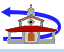

|
 |
| MAIATZAK 2 MAYO | |
11:00 |
Herri Mailako Bola Txapelketa Danantzako herri bolatokian, Danantzako bola elkarteak
sustaturik. Izen ematea 11:00etatik 11:30etara. |
12:00 |
Idi probak Haztegi Ikastolako atzeko patioan. Legazpi, Gabiria eta Ezkio-Itsaso, hiru herritako txapelketako lehen kanporaketako lehen saioa. Legazpin jokatuko da lehen kanporaketa eta 7 idi parek hartuko dute parte. 6 sailkatuko dira Gabirian abuztuaren 10ean jokatuko den 2. kanporaketa saiorako, eta Gabirian 4 sailkatuko dira Igartubeitin Urriaren 20an jokatuko den finalerako.
|
13:00 |
Haurrentzat jolasak eta tailerrak azokan. |
14:00 |
Haur eta familien herri bazkaria Euskal Herria plazan. Ohi bezala norberak eraman beharko du bere bazkaria. Eguraldi txarra balitz Azokan. |
15:00 |
Jakin eta Jolas pailazoen Musikaz Blai dantzaldia familientzat Euskal Herri plazan. Euria
balitz azokan. |
17:00 |
Haurren bizikleta festa kale nagusian Telleriarte Txirrindulari Elkartearen laguntzaz. |
17:00 |
Idi probak Haztegi Ikastolako atzeko patioan. Legazpi, Gabiria eta Ezkio-Itsaso, hiru herrietako txapelketako lehen kanporaketako bigarren saioa |
19:00 |
Erraldoi eta buruhandi Konpartsaren kalejira trikitilariekin. |
19:00 |
Herri kirol jaialdia Euskal Herria plazan: Aizkoran: Ugaitz Mugerza Iñaki Zurmendiren aurka. Fausto Mugerza 5 metroko alturan 2 korte ematen, australiar erara. Harrijasotzen: Idoia Etxeberria eta Hodei Izeta. Trontzan: Irati Astondoa eta Ainhoa Masquiaran. Eguraldi txarra balitz Urbeltz Pilotalekuan.
|
23:00 |
Herri danborradaren irteera Laubidetik. |
00:00 |
Herriko ikurriña jartzea Euskal Herria Plazan Legazpiko Ereserkiarekin. |
00:30 |
Garibaldi Mariatxia Euskal Herria plazan. |
 |
8:00MOZKORBOLA TXAPELKETA. ESNATUBERRIAK DESKALIFIKATUAK IZANGO DIRA |
18:00BIZIPOTEOA: ORAINGOAN BAI, NORBERAK TXIRRINGA ATERA ETA KARAJA PAKETE GISA HARTUTA, GAZTETXETIK HASI ETA KALEAN ZEHAR POTEOA |
21:00DANBORRADA AFARIA GAZTETXEN |